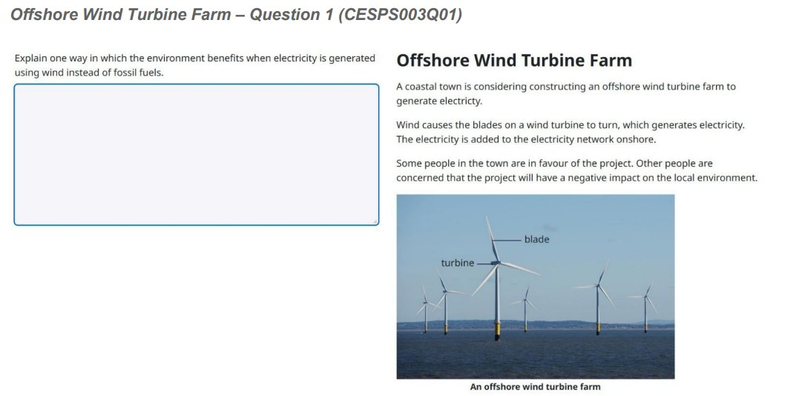
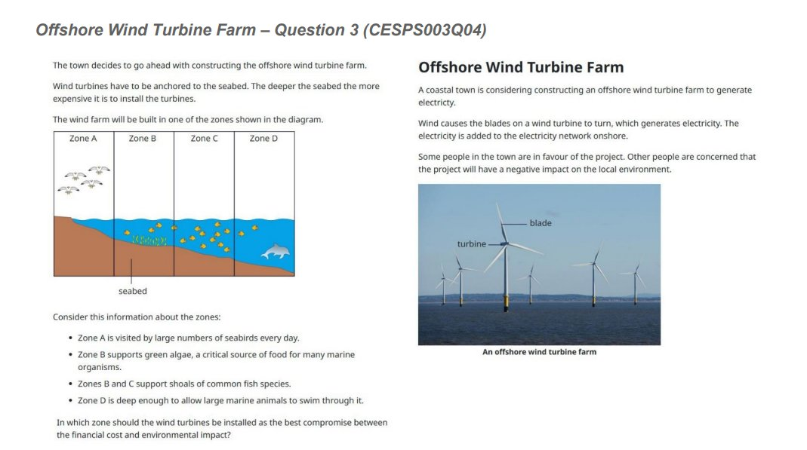
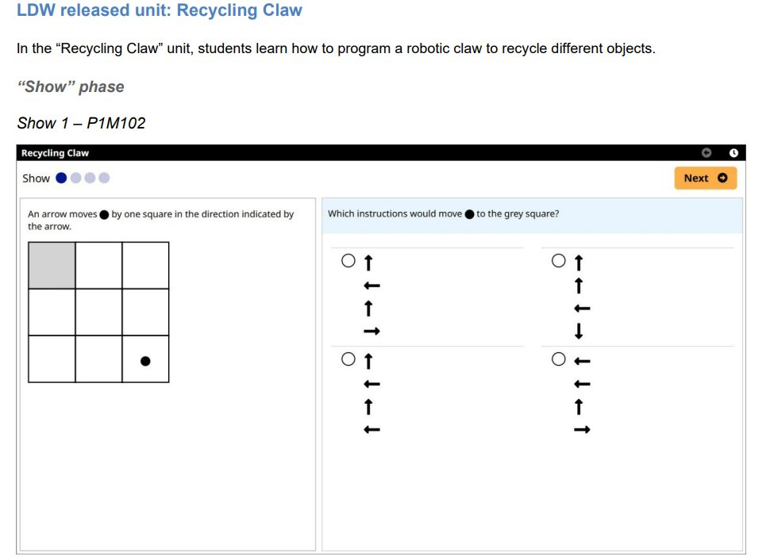
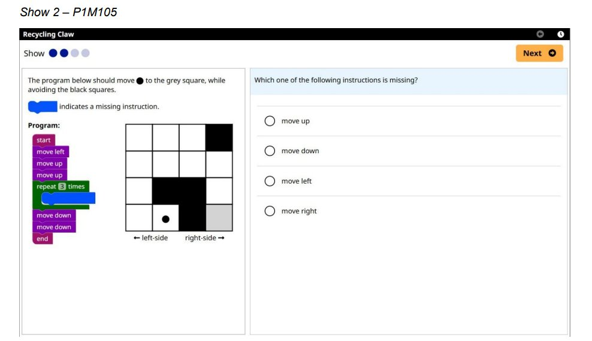
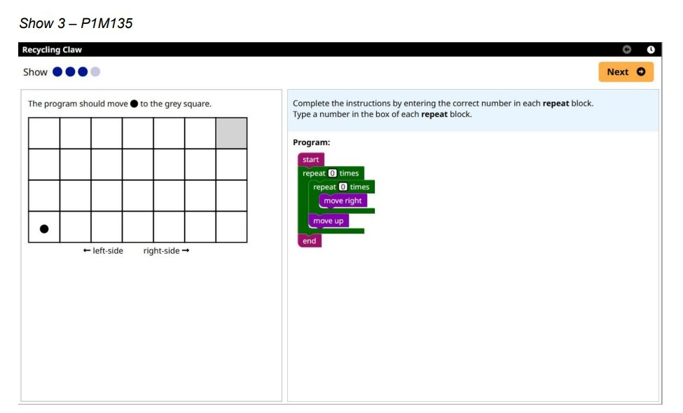
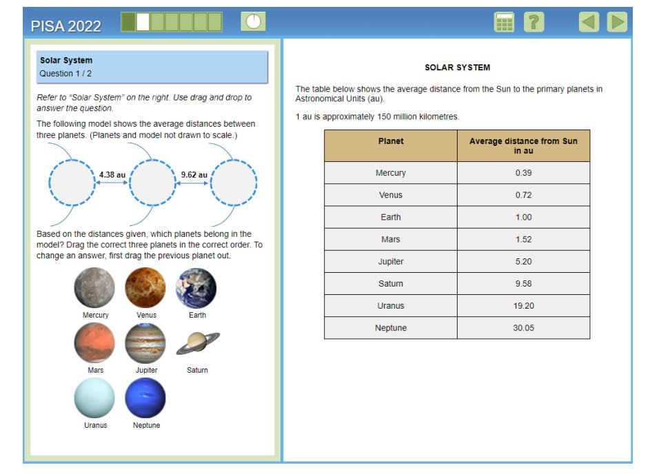
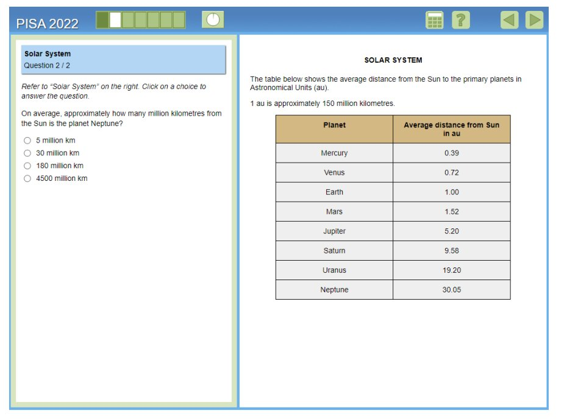
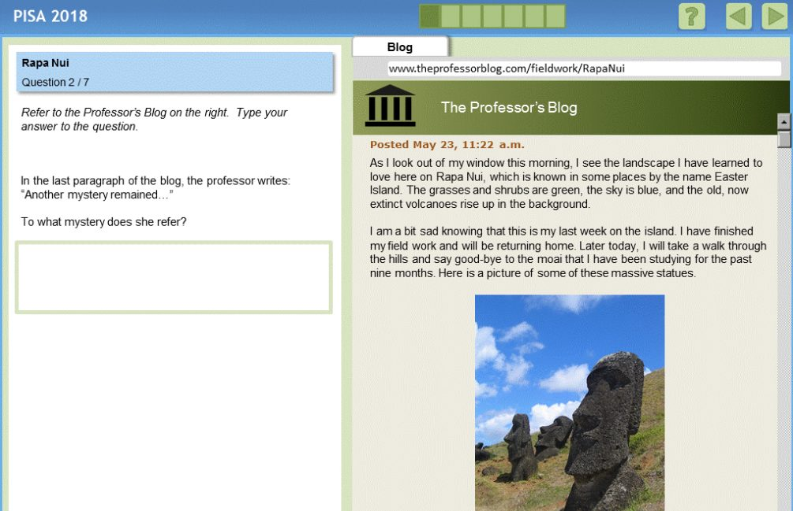

Что показывает эта страница
На этой странице — настоящие задания PISA, которые опубликовала ОЭСР, и то, как с ними справились ученики Кыргызстана, которым эти задания достались. После каждого задания — таблица: доля решивших в Кыргызстане и в среднем по странам ОЭСР.
Читать эти цифры не так просто. PISA 2025 — адаптивный тест: каждый ученик решает только часть заданий. Поэтому каждая цифра на странице — доля учеников, которым досталось задание и которые его решили. Это не доля всех пятнадцатилетних Кыргызстана.
Пример — «Робот-сортировщик». Его получили 756 учеников из 6 645 в выборке Кыргызстана (из 183 школ). Остальные ученики этот блок не видели.
Разные задания достались разным ученикам, поэтому доли по разным заданиям нельзя сравнивать между собой как «легкое» или «трудное» задание для Кыргызстана. Подробнее — на странице «Данные и методика».
Перевод наш. Официального перевода этих заданий на русский или кыргызский язык в открытом доступе нет. Описания заданий на этой странице — наш перевод с английского или наше краткое описание. Английский оригинал ОЭСР открывается под переводом кнопкой «Показать оригинал на английском». Тексты ОЭСР распространяются по лицензии CC BY 4.0. При переводе лицензия требует добавить фразу: In the event of any discrepancy between the original work and the translation, only the text of the original work should be considered valid. (если перевод расходится с оригиналом, верен только текст оригинала). ОЭСР не проверяла этот перевод и не участвовала в создании сайта.
Как рассчитано
Представленные цифры рассчитаны на основе открытой базы данных результатов PISA 2025 (ответы учащихся Кыргызстана). База данных опубликована на сайте ОЭСР и доступна для скачивания. Данные обработаны специалистами «Заманбап Мугалим» (Teach For Kyrgyzstan) с помощью моделей ИИ Gemini и Claude. Источник данных: Programme for International Student Assessment (PISA), Organisation for Economic Co-operation and Development (OECD), Paris.
Что ОЭСР опубликовала
Большинство заданий PISA хранятся в секрете: их используют повторно, чтобы сравнивать результаты разных лет. После каждого цикла ОЭСР публикует небольшую часть заданий. По PISA 2025 на сегодня опубликованы:
- Естественные науки — шесть блоков заданий. Три из них были в основном тесте 2025 года: «Утрата биоразнообразия» (Loss of Biodiversity), «Быстрая мода» (Fast Fashion) и «Морская ветровая электростанция» (Offshore Wind Turbine Farm). Еще три блока («Источник энергии», «Черная львинка», «Молния») проверялись только на пробном этапе и в основной тест не вошли.
- Вычислительное решение задач (часть «Обучение в цифровом мире») — блок «Робот-сортировщик» (Recycling Claw).
- Математика и чтение — заданий 2025 года ОЭСР не публиковала. Для примера мы показываем опубликованные задачи из PISA 2022 (математика) и PISA 2018 (чтение) и прямо помечаем это.
Все опубликованные задания можно пройти в интерактивном виде на сайте ОЭСР, на английском и французском языках: страница «PISA Test».
Естественные науки
«Утрата биоразнообразия» (Loss of Biodiversity)
О чем задание. Ученик читает материалы о видах животных, которым грозит исчезновение.
- Вопрос 1. По столбчатой диаграмме выбрать верное утверждение (верный ответ: у морских черепах доля видов под угрозой выше всего).
- Вопрос 2. Выбрать самый надежный источник информации (верный ответ: тот, что проверен учеными-специалистами).
- Вопрос 3. Объяснить, подтверждает ли график газетный заголовок (верный ответ: не подтверждает, потому что в графике нет данных о действиях людей).
| Задание | Трудность (уровень), по данным ОЭСР | Кыргызстан, % | SE | Среднее по ОЭСР, % | SE |
|---|---|---|---|---|---|
| Вопрос 1: выбрать верное утверждение по диаграмме | 388 (уровень 1a) | 43,5 | 1,7 | 68,7 | 0,3 |
| Вопрос 2: выбрать самый надежный источник | 454 (уровень 2) | 26,3 | 1,4 | 56,7 | 0,3 |
| Вопрос 3: объяснить, подтверждает ли график заголовок | 665 (уровень 5) | 1,9 | 0,5 | 14,3 | 0,2 |
«Утрата биоразнообразия»: доля решивших
Доля учеников, которым досталось задание и которые его решили, рядом со средним по ОЭСРСреднее по ОЭСР — среднее арифметическое результатов стран — членов ОЭСР: каждая страна входит в него с равным весом, сколько бы в ней ни было учащихся. Страны-партнеры, в том числе Кыргызстан, в него не входят, поэтому это не среднее по всем участникам PISA (OECD, PISA 2025 Results, Volume I, с. 20). для того же задания.
Английский оригинал задания — в интерактивной версии на сайте ОЭСР (страница «PISA Test»). Трудность и уровни вопросов — OECD, PISA 2025 Science Released Item Descriptions (Опубликовано здесь). Задание получили 970 учеников из 188 школ Кыргызстана.
Как рассчитано
Представленные цифры рассчитаны на основе открытой базы данных результатов PISA 2025 (ответы учащихся Кыргызстана). База данных опубликована на сайте ОЭСР и доступна для скачивания. Данные обработаны специалистами «Заманбап Мугалим» (Teach For Kyrgyzstan) с помощью моделей ИИ Gemini и Claude. Источник данных: Programme for International Student Assessment (PISA), Organisation for Economic Co-operation and Development (OECD), Paris.
Естественные науки
«Быстрая мода» (Fast Fashion)
О чем задание. Задание о вреде, который производство одежды из хлопка наносит природе.
- Вопрос 1. Отметить все действия, которые уменьшают вред от выращивания хлопка (верный ответ: экономить воду и применять пестициды только против конкретного вредителя).
- Вопрос 2. Выбрать факт, который подтверждает утверждение ученого об органическом хлопке.
- Вопрос 3. Выбрать самый надежный источник (первая часть) и отметить все причины, по которым он надежен (вторая часть). За верную первую часть ставится частичный балл, за обе части — полный.
| Задание | Трудность (уровень), по данным ОЭСР | Кыргызстан, % | SE | Среднее по ОЭСР, % | SE |
|---|---|---|---|---|---|
| Вопрос 1: отметить все действия, уменьшающие вред | 727 (уровень 6) | 4,4 | 0,7 | 11,4 | 0,2 |
| Вопрос 2: выбрать факт в поддержку утверждения | 624 (уровень 4) | 31,2 | 2,1 | 43,6 | 0,4 |
| Вопрос 3: частичный балл (верна первая часть) | 441 (уровень 2) | 35,7 | 2,1 | 58,8 | — |
| Вопрос 3: полный балл (верны обе части) | 726 (уровень 6) | 2,5 | 0,6 | 7,7 | — |
«Быстрая мода»: доля решивших
Доля учеников, которым досталось задание и которые его решили, рядом со средним по ОЭСРСреднее по ОЭСР — среднее арифметическое результатов стран — членов ОЭСР: каждая страна входит в него с равным весом, сколько бы в ней ни было учащихся. Страны-партнеры, в том числе Кыргызстан, в него не входят, поэтому это не среднее по всем участникам PISA (OECD, PISA 2025 Results, Volume I, с. 20). для того же задания.
Английский оригинал задания — в интерактивной версии на сайте ОЭСР (страница «PISA Test»). Трудность и уровни вопросов — OECD, PISA 2025 Science Released Item Descriptions (Опубликовано здесь). Задание получили 645 учеников из 182 школ Кыргызстана.
Частичный и полный балл показаны отдельно. Среднее по ОЭСР для третьего вопроса дано без стандартной ошибки.
Как рассчитано
Представленные цифры рассчитаны на основе открытой базы данных результатов PISA 2025 (ответы учащихся Кыргызстана). База данных опубликована на сайте ОЭСР и доступна для скачивания. Данные обработаны специалистами «Заманбап Мугалим» (Teach For Kyrgyzstan) с помощью моделей ИИ Gemini и Claude. Источник данных: Programme for International Student Assessment (PISA), Organisation for Economic Co-operation and Development (OECD), Paris.
Естественные науки
«Морская ветровая электростанция» (Offshore Wind Turbine Farm)
Задание о ветровых турбинах в море: зачем их строить, чем они могут навредить и где их лучше поставить. Ниже — описания трех вопросов из приложения C к Тому I отчета ОЭСР в нашем переводе.
Вопрос 1. «Чтобы выполнить задание, ученик должен, опираясь на научные знания, назвать и объяснить, чем использование возобновляемой энергии вместо ископаемого топлива полезно для окружающей среды». Пример ответа на полный балл: «При выработке электричества не выделяется CO₂».
Вопрос 2. «Чтобы выполнить задание, ученик должен, опираясь на свои знания, назвать и объяснить, чем установка ветровых турбин в море может навредить природе в этом месте».
Вопрос 3. «Чтобы выполнить задание, ученик должен оценить данные, представленные на схеме и в тексте, выбрать лучшее место для ветровых турбин и объяснить выбор, учитывая и экономические, и природные факторы». Нужно выбрать зону C. Полный балл ставится, если ученик объясняет компромисс между стоимостью строительства и вредом для природы; частичный — если он называет только одну из этих сторон или выбирает зону C без объяснения.
| Задание | Трудность (уровень), по данным ОЭСР | Кыргызстан, % | SE | Среднее по ОЭСР, % | SE |
|---|---|---|---|---|---|
| Вопрос 1: польза ветровых турбин для природы | 667 (уровень 5) | 3,6 | 1,1 | 25,6 | 0,3 |
| Вопрос 2: вред электростанции для природы на месте | 605 (уровень 4) | 7,1 | 1,4 | 39,2 | 0,3 |
| Вопрос 3: частичный балл (один или два балла из трех) | 559 / 625 (уровень 4) | 30,1 | 1,8 | 32,7 | 0,3 |
| Вопрос 3: полный балл (три из трех) | 762 (уровень 6) | 0,7 | 0,4 | 12,1 | 0,2 |
«Морская ветровая электростанция»: доля решивших
Доля учеников, которым досталось задание и которые его решили, рядом со средним по ОЭСРСреднее по ОЭСР — среднее арифметическое результатов стран — членов ОЭСР: каждая страна входит в него с равным весом, сколько бы в ней ни было учащихся. Страны-партнеры, в том числе Кыргызстан, в него не входят, поэтому это не среднее по всем участникам PISA (OECD, PISA 2025 Results, Volume I, с. 20). для того же задания.
Описания вопросов — OECD, PISA 2025 Results (Volume I), Annex C, pp. 346–350. Опубликовано здесь. Задание целиком можно пройти в интерактивной версии на сайте ОЭСР (страница «PISA Test»).
Показать оригинал на английском
Question 1. “To successfully complete the question, students are required to draw on their scientific knowledge to provide and explain one way in which the use of renewable energies instead of fossil fuels benefits the environment.” Example of a full-credit response: “CO₂ is not released during the generation of electricity.”
Question 2. “To successfully complete the question, the student must draw on their knowledge to provide and explain one way in which the installation of wind turbines in a marine environment could damage the immediate environment.”
Question 3. “To successfully complete the task presented in this question, the student must evaluate a series of contextual data presented in diagrammatic and text forms to determine the best location for wind turbines and provide a supporting explanation that considers both economic and environmental factors.”
Первый и второй вопросы получили 512–524 учеников (из 170–171 школ), третий вопрос — 645 учеников из 178 школ Кыргызстана.
Показать экраны задания (на английском)

Вопрос 1.

Вопрос 3.
Источник: OECD, PISA 2025 Results (Volume I), Annex C. Экраны на английском, как их опубликовала ОЭСР.
У частичного балла в третьем вопросе две ступени трудности (один и два балла).
Как рассчитано
Представленные цифры рассчитаны на основе открытой базы данных результатов PISA 2025 (ответы учащихся Кыргызстана). База данных опубликована на сайте ОЭСР и доступна для скачивания. Данные обработаны специалистами «Заманбап Мугалим» (Teach For Kyrgyzstan) с помощью моделей ИИ Gemini и Claude. Источник данных: Programme for International Student Assessment (PISA), Organisation for Economic Co-operation and Development (OECD), Paris.
Вычислительное решение задач
«Робот-сортировщик» (Recycling Claw)
Ученик управляет роботом-манипулятором, который сортирует предметы для переработки. Сначала (этап «Show») он отвечает на вопросы о командах робота, потом (этапы «Learn» и «Apply») сам собирает программу из блоков, чтобы робот разложил предметы так, как показано на образце.
«В блоке «Робот-сортировщик» ученики учатся программировать роботизированный захват, чтобы сортировать разные предметы для переработки». […] «Ученикам предлагается изменить или создать программу, с которой робот-сортировщик повторит результат, показанный на образце (Goal state)».
- Show 1. Выбрать верную последовательность команд.
- Show 2. Выбрать недостающую команду.
- Learn 3. Собрать программу, чтобы робот разложил предметы как на образце.
- Apply 3. Самостоятельная задача на сортировку.
| Задание | Трудность (уровень), по данным ОЭСР | Кыргызстан, % | SE | Среднее по ОЭСР, % | SE |
|---|---|---|---|---|---|
| Show 1: выбрать верную последовательность команд | 351 | 64,0 | 1,8 | 91,7 | 0,2 |
| Show 2: выбрать недостающую команду | 405 | 44,7 | 2,0 | 82,4 | 0,3 |
| Learn 3: собрать программу по образцу (цель достигнута) | 481 (уровень 3) | 23,9 | 1,6 | 66,5 | 0,3 |
| Apply 3: самостоятельная задача на сортировку (цель достигнута) | 687 (уровень 6) | 0,7 | 0,3 | 15,4 | 0,2 |
«Робот-сортировщик»: доля решивших
Доля учеников, которым досталось задание и которые его решили, рядом со средним по ОЭСРСреднее по ОЭСР — среднее арифметическое результатов стран — членов ОЭСР: каждая страна входит в него с равным весом, сколько бы в ней ни было учащихся. Страны-партнеры, в том числе Кыргызстан, в него не входят, поэтому это не среднее по всем участникам PISA (OECD, PISA 2025 Results, Volume I, с. 20). для того же задания.
Описание блока — OECD, PISA 2025 Results (Volume I), Annex C, pp. 351–354. Опубликовано здесь.
Показать оригинал на английском
“In the “Recycling Claw” unit, students learn how to program a robotic claw to recycle different objects.” […] “students are instructed to modify or create a program that will enable the Recycling Claw to replicate the outcome shown in the Goal state world.”
Для Learn 3 и Apply 3 показана доля учеников, у которых «цель достигнута». Это наш порог по правилам оценивания ОЭСР: засчитываются все решения, при которых программа приводит к результату с образца, даже если она длиннее нужного. Трудность для этих заданий — трудность самого низкого из таких баллов. Задание получили 756 учеников из 183 школ Кыргызстана.
Показать экраны задания (на английском)

Show 1.

Show 2.

Show 3.
Источник: OECD, PISA 2025 Results (Volume I), Annex C. Экраны на английском, как их опубликовала ОЭСР.
Для Show 1 и Show 2 уровень в приложении C не указан. «Цель достигнута» — наш порог по правилам оценивания ОЭСР.
Как рассчитано
Представленные цифры рассчитаны на основе открытой базы данных результатов PISA 2025 (ответы учащихся Кыргызстана). База данных опубликована на сайте ОЭСР и доступна для скачивания. Данные обработаны специалистами «Заманбап Мугалим» (Teach For Kyrgyzstan) с помощью моделей ИИ Gemini и Claude. Источник данных: Programme for International Student Assessment (PISA), Organisation for Economic Co-operation and Development (OECD), Paris.
Математика
Математика: задачи из PISA 2022
Заданий PISA 2025 по математике ОЭСР не публиковала. В 2025 году главной областью знаний были естественные науки, а математику проверяли заданиями прошлых лет, которые остаются засекреченными. Поэтому ниже показаны четыре блока задач из PISA 2022, которые ОЭСР опубликовала. В тест 2025 года они не входили. Шкала и уровни по математике в 2022 и 2025 годах одни и те же.
Как решили бы эти задачи школьники Кыргызстана, мы не знаем. Зато можно оценить другое: какая доля учащихся находится ниже уровня каждой задачи. ОЭСР относит задачу к тому уровню, на котором ученик решает ее примерно в шести случаях из десяти. Учащийся, чей уровень ниже уровня задания, иногда тоже решает его верно, а учащийся выше этого уровня иногда ошибается.
В таблицах рядом две доли: в Кыргызстане и в среднем по странам ОЭСР.
Математика · пример из PISA 2022
«Солнечная система» (Solar System)
Задача для примера уровня из PISA 2022, в тест 2025 года не входила.
О чем задание. В таблице дано среднее расстояние каждой планеты от Солнца в астрономических единицах. Сказано также, сколько миллионов километров примерно в одной астрономической единице.
- Вопрос 1. Перетащить три планеты в модель так, чтобы расстояния между ними совпали с указанными (верный ответ: Юпитер, Сатурн, Уран). За две верно поставленные планеты ставится частичный балл.
- Вопрос 2. Перевести расстояние от Нептуна до Солнца из астрономических единиц в миллионы километров и выбрать подходящий ответ.
| Вопрос | Трудность (уровень), по данным ОЭСР | Кыргызстан: % учащихся ниже уровня задания | SE | Среднее по ОЭСР: % учащихся ниже уровня задания |
|---|---|---|---|---|
| Вопрос 1: расставить планеты в модели (полный и частичный балл) | уровень 3 | 95,4 | 0,5 | 57,9 |
| Вопрос 2: перевести расстояние в километры | уровень 2 | 81,2 | 1,1 | 34,9 |
«Солнечная система»: доля учащихся ниже уровня задания
Доля учащихся, чей уровень ниже уровня этого задания, в Кыргызстане и в среднем по ОЭСРСреднее по ОЭСР — среднее арифметическое результатов стран — членов ОЭСР: каждая страна входит в него с равным весом, сколько бы в ней ни было учащихся. Страны-партнеры, в том числе Кыргызстан, в него не входят, поэтому это не среднее по всем участникам PISA (OECD, PISA 2025 Results, Volume I, с. 20)..
Уровни вопросов — OECD, PISA 2022 Released Main Survey New Mathematics Items (Опубликовано здесь). Там же экраны задачи на английском, верные ответы и правила оценивания. Задачу можно пройти в интерактивном виде на сайте ОЭСР (страница «PISA Test»).
Показать экраны задания (на английском)

Вопрос 1.

Вопрос 2.
Источник: OECD, PISA 2022 Released Main Survey New Mathematics Items. Экраны на английском, как их опубликовала ОЭСР.
Обе доли — суммы опубликованных ОЭСР долей учащихся на уровнях ниже уровня задания (Table I.B1.2a.12). Стандартная ошибка (SE) для Кыргызстана — наш расчет.
Как рассчитано
Представленные цифры рассчитаны на основе открытой базы данных результатов PISA 2025 (ответы учащихся Кыргызстана). База данных опубликована на сайте ОЭСР и доступна для скачивания. Данные обработаны специалистами «Заманбап Мугалим» (Teach For Kyrgyzstan) с помощью моделей ИИ Gemini и Claude. Источник данных: Programme for International Student Assessment (PISA), Organisation for Economic Co-operation and Development (OECD), Paris.
Математика · пример из PISA 2022
«Треугольный узор» (Triangular Pattern)
Задача для примера уровня из PISA 2022, в тест 2025 года не входила.
О чем задание. Узор из рядов красных и синих треугольников. На рисунке показаны первые четыре ряда.
- Вопрос 1. Посчитать, какую долю всех треугольников в четырех рядах составляют синие, и выбрать ответ в процентах.
- Вопрос 2. Мысленно продолжить узор на один ряд и найти долю синих треугольников в пяти рядах.
- Вопрос 3. Ответить, верно ли, что при добавлении новых рядов синих треугольников всегда будет меньше половины, и объяснить ответ (верный ответ: да, потому что в каждом ряду красных треугольников больше, чем синих). За неполное объяснение ставится частичный балл.
| Вопрос | Трудность (уровень), по данным ОЭСР | Кыргызстан: % учащихся ниже уровня задания | SE | Среднее по ОЭСР: % учащихся ниже уровня задания |
|---|---|---|---|---|
| Вопрос 1: доля синих треугольников в четырех рядах | уровень 1a | 49,1 | 1,3 | 15,3 |
| Вопрос 2: доля синих треугольников в пяти рядах | уровень 2 | 81,2 | 1,1 | 34,9 |
| Вопрос 3: полный балл (верный ответ и объяснение) | уровень 5 | 100,0 | 0,0 | 92,2 |
| Вопрос 3: частичный балл | уровень 4 | 99,5 | 0,1 | 78,7 |
«Треугольный узор»: доля учащихся ниже уровня задания
Доля учащихся, чей уровень ниже уровня этого задания, в Кыргызстане и в среднем по ОЭСРСреднее по ОЭСР — среднее арифметическое результатов стран — членов ОЭСР: каждая страна входит в него с равным весом, сколько бы в ней ни было учащихся. Страны-партнеры, в том числе Кыргызстан, в него не входят, поэтому это не среднее по всем участникам PISA (OECD, PISA 2025 Results, Volume I, с. 20)..
Уровни вопросов — OECD, PISA 2022 Released Main Survey New Mathematics Items (Опубликовано здесь). Там же экраны задачи на английском, верные ответы и правила оценивания. Задачу можно пройти в интерактивном виде на сайте ОЭСР (страница «PISA Test»).
Обе доли — суммы опубликованных ОЭСР долей учащихся на уровнях ниже уровня задания (Table I.B1.2a.12). Стандартная ошибка (SE) для Кыргызстана — наш расчет.
Как рассчитано
Представленные цифры рассчитаны на основе открытой базы данных результатов PISA 2025 (ответы учащихся Кыргызстана). База данных опубликована на сайте ОЭСР и доступна для скачивания. Данные обработаны специалистами «Заманбап Мугалим» (Teach For Kyrgyzstan) с помощью моделей ИИ Gemini и Claude. Источник данных: Programme for International Student Assessment (PISA), Organisation for Economic Co-operation and Development (OECD), Paris.
Математика · пример из PISA 2022
«Очки» (Points)
Задача для примера уровня из PISA 2022, в тест 2025 года не входила.
О чем задание. Газетный заголовок: местная баскетбольная команда выиграла все игры сезона, и назван ее средний отрыв в счете.
- Вопрос 1. Ответить, могло ли быть так, что команда ни разу не выиграла ровно с таким отрывом, и объяснить ответ (верный ответ: да, среднее значение может не совпадать ни с одним из чисел в наборе). Частичный балл ставится, если ученик пишет только, что одни победы были с большим отрывом, а другие с меньшим.
| Вопрос | Трудность (уровень), по данным ОЭСР | Кыргызстан: % учащихся ниже уровня задания | SE | Среднее по ОЭСР: % учащихся ниже уровня задания |
|---|---|---|---|---|
| Вопрос 1: полный балл (верный ответ и объяснение) | уровень 6 | 100,0 | 0,0 | 98,1 |
| Вопрос 1: частичный балл | уровень 5 | 100,0 | 0,0 | 92,2 |
«Очки»: доля учащихся ниже уровня задания
Доля учащихся, чей уровень ниже уровня этого задания, в Кыргызстане и в среднем по ОЭСРСреднее по ОЭСР — среднее арифметическое результатов стран — членов ОЭСР: каждая страна входит в него с равным весом, сколько бы в ней ни было учащихся. Страны-партнеры, в том числе Кыргызстан, в него не входят, поэтому это не среднее по всем участникам PISA (OECD, PISA 2025 Results, Volume I, с. 20)..
Уровни вопросов — OECD, PISA 2022 Released Main Survey New Mathematics Items (Опубликовано здесь). Там же экраны задачи на английском, верные ответы и правила оценивания. Задачу можно пройти в интерактивном виде на сайте ОЭСР (страница «PISA Test»).
Обе доли — суммы опубликованных ОЭСР долей учащихся на уровнях ниже уровня задания (Table I.B1.2a.12). Стандартная ошибка (SE) для Кыргызстана — наш расчет.
Долю учащихся Кыргызстана на уровне 6 ОЭСР не приводит (пометка «c»: слишком мало учащихся для оценки). Поэтому для заданий уровня 6 в таблице стоит сумма долей на всех более низких уровнях.
Как рассчитано
Представленные цифры рассчитаны на основе открытой базы данных результатов PISA 2025 (ответы учащихся Кыргызстана). База данных опубликована на сайте ОЭСР и доступна для скачивания. Данные обработаны специалистами «Заманбап Мугалим» (Teach For Kyrgyzstan) с помощью моделей ИИ Gemini и Claude. Источник данных: Programme for International Student Assessment (PISA), Organisation for Economic Co-operation and Development (OECD), Paris.
Математика · пример из PISA 2022
«Площадь лесов» (Forested Area)
Задача для примера уровня из PISA 2022, в тест 2025 года не входила.
О чем задание. Электронная таблица: какая доля территории покрыта лесом в пятнадцати странах, за три года наблюдений. Ученик может сортировать столбцы, вычитать один столбец из другого и считать средние.
- Вопрос 1. Найти страну с наибольшим ростом доли лесов, страну без изменений и страну с наибольшим снижением между первым и последним годом. За две верные страны из трех ставится частичный балл.
- Вопрос 2. Выбрать верное утверждение о среднем изменении доли лесов в двух периодах (верный ответ: в обоих периодах среднее изменение отрицательное).
- Вопрос 3. Найти две страны, у которых изменение доли лесов сильнее всего различается между двумя периодами. За одну верную страну ставится частичный балл.
- Вопрос 4. Ответить, подтверждают ли данные утверждение, что в Южной Корее больше леса, чем в других странах списка, и объяснить ответ (верный ответ: нет, в таблице даны только доли, а площади самих стран там нет).
| Вопрос | Трудность (уровень), по данным ОЭСР | Кыргызстан: % учащихся ниже уровня задания | SE | Среднее по ОЭСР: % учащихся ниже уровня задания |
|---|---|---|---|---|
| Вопрос 1: полный балл (три страны) | уровень 5 | 100,0 | 0,0 | 92,2 |
| Вопрос 1: частичный балл (две страны) | уровень 4 | 99,5 | 0,1 | 78,7 |
| Вопрос 2: среднее изменение в двух периодах | уровень 5 | 100,0 | 0,0 | 92,2 |
| Вопрос 3: полный балл (две страны) | уровень 6 | 100,0 | 0,0 | 98,1 |
| Вопрос 3: частичный балл (одна страна) | уровень 5 | 100,0 | 0,0 | 92,2 |
| Вопрос 4: подтверждают ли данные утверждение | уровень 6 | 100,0 | 0,0 | 98,1 |
«Площадь лесов»: доля учащихся ниже уровня задания
Доля учащихся, чей уровень ниже уровня этого задания, в Кыргызстане и в среднем по ОЭСРСреднее по ОЭСР — среднее арифметическое результатов стран — членов ОЭСР: каждая страна входит в него с равным весом, сколько бы в ней ни было учащихся. Страны-партнеры, в том числе Кыргызстан, в него не входят, поэтому это не среднее по всем участникам PISA (OECD, PISA 2025 Results, Volume I, с. 20)..
Уровни вопросов — OECD, PISA 2022 Released Main Survey New Mathematics Items (Опубликовано здесь). Там же экраны задачи на английском, верные ответы и правила оценивания. Задачу можно пройти в интерактивном виде на сайте ОЭСР (страница «PISA Test»).
Обе доли — суммы опубликованных ОЭСР долей учащихся на уровнях ниже уровня задания (Table I.B1.2a.12). Стандартная ошибка (SE) для Кыргызстана — наш расчет.
Долю учащихся Кыргызстана на уровне 6 ОЭСР не приводит (пометка «c»: слишком мало учащихся для оценки). Поэтому для заданий уровня 6 в таблице стоит сумма долей на всех более низких уровнях.
Как рассчитано
Представленные цифры рассчитаны на основе открытой базы данных результатов PISA 2025 (ответы учащихся Кыргызстана). База данных опубликована на сайте ОЭСР и доступна для скачивания. Данные обработаны специалистами «Заманбап Мугалим» (Teach For Kyrgyzstan) с помощью моделей ИИ Gemini и Claude. Источник данных: Programme for International Student Assessment (PISA), Organisation for Economic Co-operation and Development (OECD), Paris.
Чтение
Чтение: задания из PISA 2018
Заданий PISA 2025 по чтению ОЭСР не публиковала. Тест по чтению 2025 года построен на тесте 2018 года: шкала и уровни те же, а задания 2025 года уже использовались в двух предыдущих циклах (OECD, PISA 2025 Results, Volume I, p. 311). Поэтому ниже показаны три блока из PISA 2018, которые ОЭСР опубликовала. В тест 2025 года они не входили.
Блок «Рапа-Нуи» был в основном тесте 2018 года. Блоки «Куриный форум» и «Коровье молоко» проверялись только на пробном этапе 2018 года, и их трудность ОЭСР оценила по этому этапу. Еще один опубликованный блок, «Галапагосские острова», ученикам не давали, и трудность для него не опубликована. Поэтому его здесь нет.
Как и для математики, в таблицах показана доля учащихся, чей уровень по чтению ниже уровня задания, в Кыргызстане и в среднем по странам ОЭСР.
Чтение · пример из PISA 2018
«Рапа-Нуи» (Rapa Nui)
Задание для примера уровня из PISA 2018, в тест 2025 года не входило.
О чем задание. Ученик готовится к лекции профессора о ее работе на острове Рапа-Нуи (остров Пасхи). Он читает три текста: блог профессора, рецензию на книгу «Коллапс» и статью из научного журнала о том, почему на острове исчезли большие деревья.
- Вопрос 1. Найти в блоге, когда профессор начала работу на острове (верный ответ: девять месяцев назад).
- Вопрос 2. Своими словами назвать вторую загадку, о которой пишет профессор (верный ответ: что случилось с большими деревьями, на которых перевозили статуи моаи).
- Вопрос 3. Для каждого из пяти утверждений из рецензии решить, факт это или мнение. За четыре верных ответа из пяти ставится частичный балл.
- Вопрос 4. Найти в статье, в чем согласны ученые и Джаред Даймонд (верный ответ: большие деревья на острове исчезли).
- Вопрос 5. Выбрать факт, который подтверждает теорию Карла Липо и Терри Ханта (верный ответ: на остатках пальмовых орехов видны следы зубов крыс).
- Вопрос 6. Сопоставить причины и общее следствие в двух теориях: по Даймонду, люди вырубили деревья, по Липо и Ханту, крысы съели семена, и в обоих случаях большие деревья исчезли.
- Вопрос 7. Решить, какую теорию поддержать, и подкрепить выбор сведениями из текстов.
| Вопрос | Трудность (уровень), по данным ОЭСР | Кыргызстан: % учащихся ниже уровня задания | SE | Среднее по ОЭСР: % учащихся ниже уровня задания |
|---|---|---|---|---|
| Вопрос 1: найти в блоге, когда началась работа | 559 (уровень 4) | 99,7 | 0,1 | 80,0 |
| Вопрос 2: назвать вторую загадку | 513 (уровень 3) | 95,5 | 0,5 | 56,2 |
| Вопрос 3: факт или мнение | 654 (уровень 5) | 100,0 | 0,0 | 94,5 |
| Вопрос 4: в чем согласны ученые | 634 (уровень 5) | 100,0 | 0,0 | 94,5 |
| Вопрос 5: факт в поддержку теории | 597 (уровень 4) | 99,7 | 0,1 | 80,0 |
| Вопрос 6: причины и следствие в двух теориях | 665 (уровень 5) | 100,0 | 0,0 | 94,5 |
| Вопрос 7: какую теорию поддержать | 588 (уровень 4) | 99,7 | 0,1 | 80,0 |
«Рапа-Нуи»: доля учащихся ниже уровня задания
Доля учащихся, чей уровень ниже уровня этого задания, в Кыргызстане и в среднем по ОЭСРСреднее по ОЭСР — среднее арифметическое результатов стран — членов ОЭСР: каждая страна входит в него с равным весом, сколько бы в ней ни было учащихся. Страны-партнеры, в том числе Кыргызстан, в него не входят, поэтому это не среднее по всем участникам PISA (OECD, PISA 2025 Results, Volume I, с. 20)..
Трудность и уровни вопросов — OECD, PISA 2018 Released FT and MS Reading Literacy Items (Опубликовано здесь). Там же экраны задания на английском, верные ответы и правила оценивания.
Показать экраны задания (на английском)

Вопрос 2.
Источник: OECD, PISA 2018 Released FT and MS Reading Literacy Items. Экраны на английском, как их опубликовала ОЭСР.
Обе доли — суммы опубликованных ОЭСР долей учащихся на уровнях ниже уровня задания (Table I.B1.2a.11). Стандартная ошибка (SE) для Кыргызстана — наш расчет.
Доли учащихся Кыргызстана на уровне 5 и на уровне 6 ОЭСР не приводит (пометка «c»: слишком мало учащихся для оценки). Поэтому для заданий уровня 5 в таблице стоит сумма долей на всех более низких уровнях.
Как рассчитано
Представленные цифры рассчитаны на основе открытой базы данных результатов PISA 2025 (ответы учащихся Кыргызстана). База данных опубликована на сайте ОЭСР и доступна для скачивания. Данные обработаны специалистами «Заманбап Мугалим» (Teach For Kyrgyzstan) с помощью моделей ИИ Gemini и Claude. Источник данных: Programme for International Student Assessment (PISA), Organisation for Economic Co-operation and Development (OECD), Paris.
Чтение · пример из PISA 2018
«Куриный форум» (Chicken Forum)
Задание для примера уровня из пробного этапа PISA 2018, в тест 2025 года не входило.
О чем задание. Интернет-форум о здоровье кур. Ивана спрашивает, можно ли дать аспирин раненой курице, и ей отвечают несколько человек.
- Вопрос 1. Понять, о чем спрашивает Ивана (верный ответ: можно ли дать аспирин раненой курице).
- Вопрос 2. Понять, почему Ивана написала на форум (верный ответ: она хочет помочь курице как можно скорее).
- Вопрос 3. Для каждого из пяти сообщений решить, относится ли оно к вопросу Иваны.
- Вопрос 4. Найти, кто уже давал аспирин своей курице и с ней все было хорошо.
- Вопрос 5. Понять, зачем написано одно из сообщений (верный ответ: чтобы прорекламировать магазин).
- Вопрос 6. Выбрать ответ, которому можно доверять, и объяснить почему.
- Вопрос 7. Объяснить, почему ветеринар не может назвать точную дозу аспирина (верный ответ: Ивана не написала, сколько весит курица).
| Вопрос | Трудность (уровень), по данным ОЭСР | Кыргызстан: % учащихся ниже уровня задания | SE | Среднее по ОЭСР: % учащихся ниже уровня задания |
|---|---|---|---|---|
| Вопрос 1: о чем спрашивает автор | 328 (уровень 1b) | 12,8 | 0,7 | 2,9 |
| Вопрос 2: почему она написала на форум | 357 (уровень 1a) | 48,1 | 1,4 | 12,4 |
| Вопрос 3: какие сообщения относятся к вопросу | 458 (уровень 2) | 80,2 | 1,1 | 31,0 |
| Вопрос 4: кто уже давал аспирин | 328 (уровень 1b) | 12,8 | 0,7 | 2,9 |
| Вопрос 5: зачем написано сообщение | 347 (уровень 1a) | 48,1 | 1,4 | 12,4 |
| Вопрос 6: какому ответу можно доверять | 409 (уровень 2) | 80,2 | 1,1 | 31,0 |
| Вопрос 7: почему нельзя назвать дозу | 466 (уровень 2) | 80,2 | 1,1 | 31,0 |
«Куриный форум»: доля учащихся ниже уровня задания
Доля учащихся, чей уровень ниже уровня этого задания, в Кыргызстане и в среднем по ОЭСРСреднее по ОЭСР — среднее арифметическое результатов стран — членов ОЭСР: каждая страна входит в него с равным весом, сколько бы в ней ни было учащихся. Страны-партнеры, в том числе Кыргызстан, в него не входят, поэтому это не среднее по всем участникам PISA (OECD, PISA 2025 Results, Volume I, с. 20)..
Трудность и уровни вопросов — OECD, PISA 2018 Released FT and MS Reading Literacy Items (Опубликовано здесь). Там же экраны задания на английском, верные ответы и правила оценивания. Этот блок проверялся только на пробном этапе PISA 2018, и его трудность ОЭСР оценила по данным пробного этапа.
Обе доли — суммы опубликованных ОЭСР долей учащихся на уровнях ниже уровня задания (Table I.B1.2a.11). Стандартная ошибка (SE) для Кыргызстана — наш расчет.
Как рассчитано
Представленные цифры рассчитаны на основе открытой базы данных результатов PISA 2025 (ответы учащихся Кыргызстана). База данных опубликована на сайте ОЭСР и доступна для скачивания. Данные обработаны специалистами «Заманбап Мугалим» (Teach For Kyrgyzstan) с помощью моделей ИИ Gemini и Claude. Источник данных: Programme for International Student Assessment (PISA), Organisation for Economic Co-operation and Development (OECD), Paris.
Чтение · пример из PISA 2018
«Коровье молоко» (Cow’s Milk)
Задание для примера уровня из пробного этапа PISA 2018, в тест 2025 года не входило.
О чем задание. Кафе перестает подавать коровье молоко. Трое школьников читают две веб-страницы: страницу молочной компании и статью «Просто скажите нет коровьему молоку!».
- Вопрос 1. Понять, что говорится о молоке на странице компании (верный ответ: молоко — хороший источник витаминов и минералов).
- Вопрос 2. Определить главную цель страницы компании (верный ответ: поддержать продажи ее молочных продуктов).
- Вопрос 3. Для каждого из трех утверждений решить, могло ли это быть целью автора статьи.
- Вопрос 4. Назвать один из результатов исследований, о которых пишет статья.
- Вопрос 5. Для каждого из четырех утверждений из двух текстов решить, факт это или мнение. За три верных ответа из четырех ставится частичный балл.
- Вопрос 6. Определить, в чем главное расхождение двух страниц (верный ответ: полезно ли молоко для здоровья и нужно ли оно в питании).
- Вопрос 7. Выбрать одну из трех позиций и подкрепить ее сведениями из текстов.
| Вопрос | Трудность (уровень), по данным ОЭСР | Кыргызстан: % учащихся ниже уровня задания | SE | Среднее по ОЭСР: % учащихся ниже уровня задания |
|---|---|---|---|---|
| Вопрос 1: что говорится о молоке | 323 (уровень 1b) | 12,8 | 0,7 | 2,9 |
| Вопрос 2: цель страницы компании | 452 (уровень 2) | 80,2 | 1,1 | 31,0 |
| Вопрос 3: цели автора статьи | 539 (уровень 3) | 95,5 | 0,5 | 56,2 |
| Вопрос 5: факт или мнение | 662 (уровень 5) | 100,0 | 0,0 | 94,5 |
| Вопрос 6: в чем расхождение страниц | 406 (уровень 1a) | 48,1 | 1,4 | 12,4 |
| Вопрос 7: выбрать позицию и обосновать | 506 (уровень 3) | 95,5 | 0,5 | 56,2 |
«Коровье молоко»: доля учащихся ниже уровня задания
Доля учащихся, чей уровень ниже уровня этого задания, в Кыргызстане и в среднем по ОЭСРСреднее по ОЭСР — среднее арифметическое результатов стран — членов ОЭСР: каждая страна входит в него с равным весом, сколько бы в ней ни было учащихся. Страны-партнеры, в том числе Кыргызстан, в него не входят, поэтому это не среднее по всем участникам PISA (OECD, PISA 2025 Results, Volume I, с. 20)..
Трудность и уровни вопросов — OECD, PISA 2018 Released FT and MS Reading Literacy Items (Опубликовано здесь). Там же экраны задания на английском, верные ответы и правила оценивания. Этот блок проверялся только на пробном этапе PISA 2018, и его трудность ОЭСР оценила по данным пробного этапа. Вопроса 4 нет в таблице: в документе ОЭСР его трудность в баллах и уровень не согласуются друг с другом.
Обе доли — суммы опубликованных ОЭСР долей учащихся на уровнях ниже уровня задания (Table I.B1.2a.11). Стандартная ошибка (SE) для Кыргызстана — наш расчет.
Доли учащихся Кыргызстана на уровне 5 и на уровне 6 ОЭСР не приводит (пометка «c»: слишком мало учащихся для оценки). Поэтому для заданий уровня 5 в таблице стоит сумма долей на всех более низких уровнях.
Как рассчитано
Представленные цифры рассчитаны на основе открытой базы данных результатов PISA 2025 (ответы учащихся Кыргызстана). База данных опубликована на сайте ОЭСР и доступна для скачивания. Данные обработаны специалистами «Заманбап Мугалим» (Teach For Kyrgyzstan) с помощью моделей ИИ Gemini и Claude. Источник данных: Programme for International Student Assessment (PISA), Organisation for Economic Co-operation and Development (OECD), Paris.
Как читать эти цифры
- Тест адаптивный: каждое задание получила только часть учеников, и эта часть не случайная.
- Каждая доля на этой странице — доля учеников, которым досталось задание и которые его решили. Это не доля всех пятнадцатилетних Кыргызстана.
- «Трудность» — точка шкалы PISA, в которой ученик решает задание примерно в шести случаях из десяти. Ученики ниже этого уровня иногда тоже решают задание, а ученики выше — иногда ошибаются.
- Доли учеников — наш расчет (подпись «Source: calculations based on OECD, PISA 2025 Database»). Трудность и уровни заданий опубликованы ОЭСР. Все источники перечислены на странице «Данные и методика».
- Логотип ОЭСР на сайте не используется.